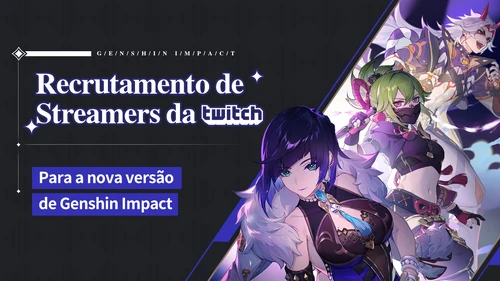

Recrutamento de streamers da versão 2.7

Duração: 23 de maio de 2022 23:59:00 ~ 21 de junho de 2022 23:59:00 GMT+8
Desafios
Principal Desafio de Streaming (máximo de 640 Gemas Essenciais)
Transmitir ao vivo na categoria de Genshin Impact
Durante o período do evento, transmita ao vivo na categoria de Genshin Impact por:
8-16 horas para obter 160 Gemas Essenciais como recompensa
16-24 horas para obter 320 Gemas Essenciais como recompensa
Mais de 24 horas para obter 640 Gemas Essenciais como recompensa